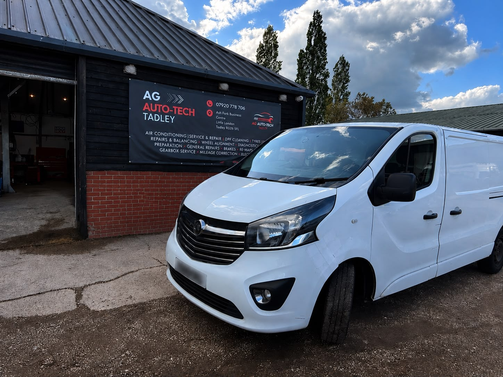
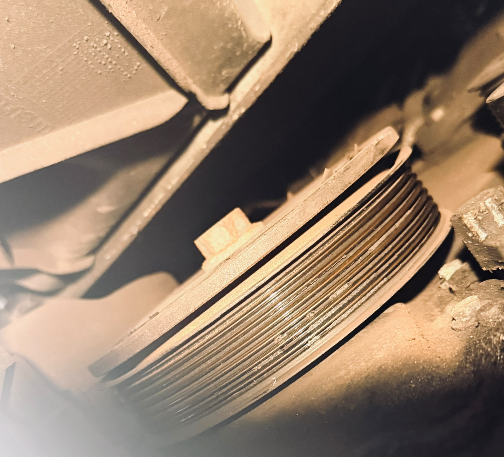
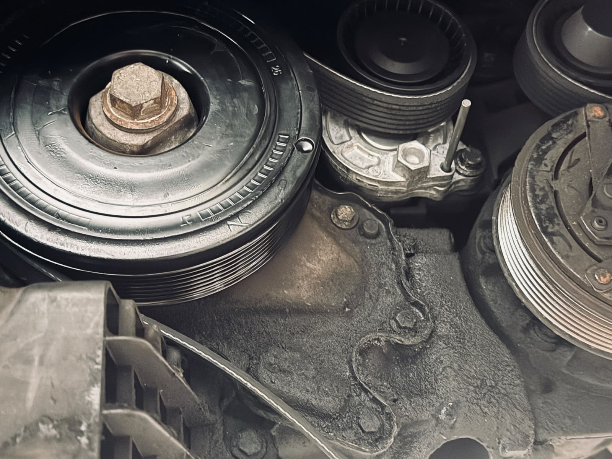

Vauxhall Vivaro Engine Noise, Pulley & Belt Service
The customer brought this Vauxhall Vivaro to us after noticing unusual noises coming from the engine bay. Following a thorough inspection, we identified the source of the problem as a failing crankshaft pulley, a worn belt tensioner pulley and a deteriorated auxiliary drive belt.
The Fault
The customer reported a noticeable engine bay noise. Our inspection confirmed wear and damage around the auxiliary belt drive system, including the crankshaft pulley, belt tensioner pulley and auxiliary drive belt.
These components work together to drive important engine accessories. When they become worn or damaged, they can create noise, vibration and a much higher risk of sudden failure.
The Risk
Ignoring unusual engine noises can quickly lead to more serious mechanical failures, increased repair costs and even vehicle breakdowns. Worn pulleys and auxiliary belts can fail without warning, potentially causing further damage to engine accessories and leaving the vehicle stranded.
Regular servicing is equally important. Delayed oil changes and neglected maintenance can increase engine wear, reduce performance, affect fuel economy and result in significantly higher repair costs.
The Repair
Our technicians replaced all defective components using quality replacement parts and carried out a full engine oil service to ensure the vehicle left our workshop in reliable condition.
- Engine bay noise inspection carried out.
- Faulty crankshaft pulley replaced.
- Damaged belt tensioner pulley replaced.
- Worn auxiliary drive belt replaced.
- Complete engine oil service carried out.
- Final checks completed before handover.
Before & After
Clear comparison of the worn pulley condition before repair and the replacement components fitted afterwards.
Crankshaft pulley and auxiliary belt drive repair


Photo Gallery
Click any photo to open it in a larger view.

{kind=link}
{kind=link}
{kind=link}
{kind=link}
{kind=link}
{kind=link}
The Result
After replacing the faulty pulley components, fitting a new auxiliary drive belt and completing the engine oil service, the Vivaro was returned to the customer running more smoothly and reliably.
Preventative maintenance and early investigation of unusual noises help prevent breakdowns, protect engine components and keep the vehicle safe and dependable on the road.